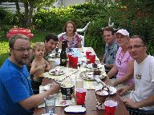
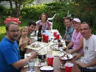
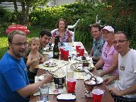
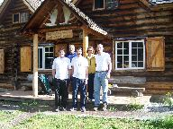
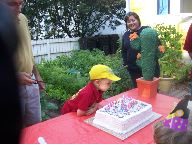
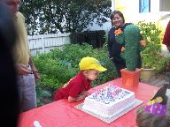
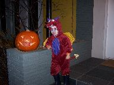
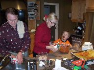
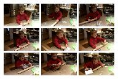
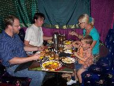

2007: Family Time

This letter is also available in Portuguese.
It is Dec. 24th, we are in Oklahoma and set to fly to the South Atlantic Coast in a couple of days. Just before we left Edmonton Daniel caught a terrible cold, flying down with a sick boy was a nightmare. Daniel has since recovered but not before passing his virus to Scott and myself. We are hoping to be on the mend before the long flight on Dec. 26th. Our plan is to spend about a week at a nice Pousada in Santa Catarina and the balance of the time at my mother's house beach in Xangrila'. We shall be back home on January 11.

 The highlight of this year was our Summer time with family in
Alberta. My brother Marcos came to help out with a basement remodeling
project that has been going on for a couple of years. We made lots of
progress. Then my nephew Tiago and my sister Salete came and we went
on a tour of the Rockie Mountains that included a stay at the Skoki
Lodge, a back-country lodge that is accessible by a 14 Km hike. Gaga'
and Grandpa came to Edmonton to stay with Daniel while we were
traveling.
The highlight of this year was our Summer time with family in
Alberta. My brother Marcos came to help out with a basement remodeling
project that has been going on for a couple of years. We made lots of
progress. Then my nephew Tiago and my sister Salete came and we went
on a tour of the Rockie Mountains that included a stay at the Skoki
Lodge, a back-country lodge that is accessible by a 14 Km hike. Gaga'
and Grandpa came to Edmonton to stay with Daniel while we were
traveling.
As Daniel turn 3 in August, he graduated from the "little boy school" to the "big-boy school". He was unsetled for two months because of this transition, but now he loves his new "school".
 We got to see Emily, Daniel's middle sister twice this year. We
went for a visit in Calgary in May and they came to visit us in
Edmonton in November. Daniel loves to play with his sister. Lately
Daniel has been asking a lot about his Mommy and about his big sister
Mac. From what I can understand, his main concern is a desire to
conform in school. Every other child in daycare has a Mommy. Thus
Daniel wants to have a Mommy too. Sometimes he asks Papai to be his
Mommy.
We got to see Emily, Daniel's middle sister twice this year. We
went for a visit in Calgary in May and they came to visit us in
Edmonton in November. Daniel loves to play with his sister. Lately
Daniel has been asking a lot about his Mommy and about his big sister
Mac. From what I can understand, his main concern is a desire to
conform in school. Every other child in daycare has a Mommy. Thus
Daniel wants to have a Mommy too. Sometimes he asks Papai to be his
Mommy.
 

 We had a nice backyard party for Daniel's 3rd birthday in
August. Many of his friends attended. Gaga' and Grandpa brought lots
of Mexican decorations and a big pinata for a complete Mexican-themed
party.
We had a nice backyard party for Daniel's 3rd birthday in
August. Many of his friends attended. Gaga' and Grandpa brought lots
of Mexican decorations and a big pinata for a complete Mexican-themed
party.
The highlight for Daniel was a two-day trip to the Dinosaur Museum in Drumheller on Grandpa's motorhome with Daddy, Papai, Tio Marco, and Tiago. He has talked about those two days for the rest of the year. Thus we are planning some more motorhome adventures for the coming Summer.
 For the first part of the year Scott was very busy with consulting work. Things slowed down on the second half of the year and Scott started to work part time as a Wine store clerk. He says that he wants to learn about wine, and he is intrigued aobut the possibility of starting a wine retail shop. Thus this part-time job is a good chance to learn more about the business.
My work has kept me busy as usual, and brought travel to usual places: San Francisco, San Jose, San Diego, Austin, Urbana, Toronto, Victoria. Of note was a January trip to Ghent in Belgium. I took the opportunity to spend the weekend visting Brussels.
Daniel loves Halloween. Gaga' and Grandpa came back to Edmonton to celebrate Halloween, decorate the house, carve the pumpkin, etc. Daniel went out as a nice Dragon this year.
   At home Daniel also likes very much to help cooking and baking. When we are baking a cake together, Papai has to work fast so that there is enough dough left to bake! Daniel also likes to help Daddy makes pancakes. HE also likes very much to go eat at restaurants
I guess I will have to leave you now to go pack our swimsuits. We hope you all have a nice holiday.
Nelson, Scott & Daniel{kind=link}
{kind=link}
{kind=link}
{kind=link}
{kind=link}
{kind=link}